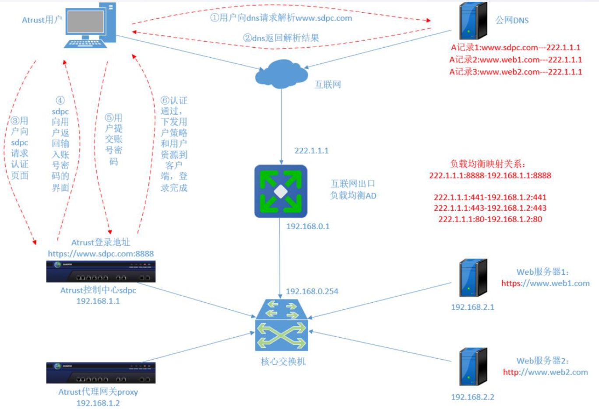
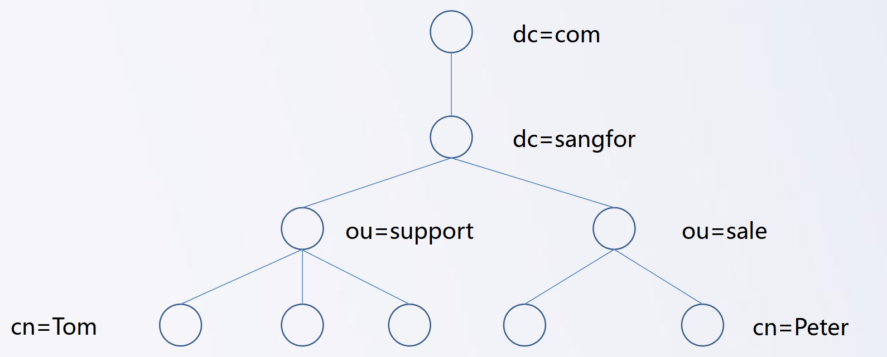

aTrust用户认证
aTrust用户认证
用户管理
定义：用户管理，用于提供用户认证登录的用户源 ，管理各个认证服务器的用户和组织信息。可实现用户/组织的新增、删除、编辑，实现用户、组织架构、角色的精细化授权，和策略绑定（包括认证策略和用户策略）。
aTrust用户目录，主要有两种来源，分别是外部和本地
- 本地
- 本地用户目录：本地用户目录是aTrust设备内置的数据库用户目录管理，当客户没有第三方用户服务器时，可使用本地用户目录进行管理
- 自定义本地用户目录：客户使用的是第三方的认证服务器，但第三方认证服务器没有提供LDAP/AD或企业微信等用户源设备导入至aTrust本地。此时我们可使用自定义本地用户目录，将第三方的用户信息批量导入aTrust本地。
- 支持用户名自动忽略大小写
- 未导入用户禁止登录
- 未导入用户允许登录
- 可选择使用默认授权和默认策略
- 根据认证时解析的组织架构和角色信息获取授权和策略（即组映射）
- 用户源选择本地时，用户的账号和密码信息是保存在aTrust的数据库内。本地用户目录aTrust支持如下功能。
- 新增组织架构，角色和用户
- 用户的批量导入和导出功能
- 精细化授权，可通过组织架构，角色和用户针对性的进行应用授权
- 外部
- 微软MS ActiveDirectory、Open LDAP、Sangfor IDTrust LDAP
- 企业微信、钉钉
- 外部用户可实现同步至aTrust设备本地，实现如下功能：
- 精细化授权，可通过组织架构，角色和用户针对性的进行应用授权
- LDAP/AD用户目录，支持立即同步和定时自动同步用户信息，支持导入安全组
- 企业微信用户目录，支持立即同步和定时自动同步用户信息功能
用户认证概述
aTrust支持的认证方式主要包括以下几种：
主要认证方式：
用户名密码、LDAP/AD认证、CAS票据认证、RADIUS账号认证、证书认证
短信主认证、OAuth2.0票据认证、钉钉认证、企业微信认证
从标准版本aTrust 2.2.16开始，客户端支持普密Ukey认证[1]。
- 二次认证方式（辅助认证）
- 短信辅助认证
- RADIUS令牌认证
- TOTP动态令牌认证
- 第三方令牌认证
- 证书认证
零信任aTrust用户认证原理

用户接入认证流量：
- 用户在浏览器或客户端输入客户端接入域名地址（若是IP地址则不需要解析）；
- 接入域名地址由DNS服务器解析，并返回解析结果；
- 控制中心返回用户认证页面；
- 用户在认证界面输入账号密码，点击登录；
- 用户账号密码信息提交给认证服务器；
- 认证通过，下发用户策略和用户资源到客户端，登录完成。
LDAP外部认证
LDAP：是轻量目录访问协议(Lightweight Directory Access Protocol)的缩写，顾名思义，LDAP是设计用来访问目录数据库的一个协议，它基于X.500标准。
目录服务：由目录服务数据库和目录访问协议组成。
目录服务数据库：是一种数据库，这种数据库相对于我们熟知的关系型数据库(比如MySQL,Oracle),主要有以下几个方面的特点。
- 它成树状结构组织数据，类似文件目录一样。
- 它是为查询、浏览和搜索而优化的数据库，也就是说LDAP的读性能特别强，但是写性能差，而且还不支持
事务处理、回滚等复杂功能。为了能够访问目录数据库，必须设计一台能够访问目录服务数据库的协议，而LDAP是其中一种实现协议
注：LDAP端口号为389，LDAPS端口号636
简单逻辑

目录树：如上图所示，在一个目录服务系统中，整个目录信息集可以表示为一个目录信息树，树中的每个节点是一个条目。
条目：每个条目就是一条记录，每个条目有自己的唯一可区别的名称（DN）。比如图中的每个圆圈都是一条记录
属性：描述条目具体信息。比如cn=Tom,ou=support,dc=sangfor,dc=com，他有属性name为Tom，属性age为11，属性school 为xx
短信认证
短信认证 ，通过绑定手机号接收短信验证码的认证手段。现阶段短信验证认证用于辅助认证和主认证，在用户登录时与LDAP/AD认证服务器、CAS认证服务器、OAuth2.0票据认证服务器和本地认证等配合使用，可根据用户性质创建不同的认证策略，实现用户灵活认证。
短信认证适用场景：
- 用户登入进行主认证
- 用户登录二次认证
- 自适应认证的增强认证
- 应用防护策略和上线准入策略灰度处置的增强认证
aTrust自适应认证
在传统SSL VPN远程办公场景中，只是粗粒度的安全等级划分的，没有信任的评判机制。同时用户登录VPN设备时，设备不会判断用户终端是否可信，网络环境是否可信，而是进行统一的认证方式[主认证+辅助认证]，没有过多的考虑用户体验和安全的平衡。
零信任aTrust产品的出现改变了这个格局，零信任设备有信任评判机制，可根据用户所处的网络环境动态自适应的调整用户登录方式，真正意义上的做到了安全和体验的平衡
免二次认证/一键上线的条件：
- 受信终端
- 电脑加域
- 可信网络
增强认证条件（安全规则）：
- 账号首次登陆
- 账号该终端首次登陆
- 限制账号登录
- 账号弱密码
- 异常时间段登录
- 非常用地点登录
注：无论是免二次、一键登录还是增强认证，均是匹配到响应的规则才弹出认证
安全基线
安全基线，是基于威胁脆弱点而制定的一系列安全防护策略，用于执行企业的安全基线。通过对访问过程全生命周期进行实时检测，当触发策略条件时，执行对应的防护动作，即动态ACL。
动态访问控制属于零信任的核心能力,动态ACL的需求范围包括：
- 安装终端环境检查：操作系统、补丁、安装软件列表、是否安装指定软件、是否安装防病毒软件、防病毒软件病毒库是否最新、是否运行指定软件
- 域控检查：如财务人员访问的业务系统时强制要求域控环境（财务部门访问的常用系统，如财务系统）
- 内外网检查
安全基线包含应用防护策略和上线准入策略：
- 应用防护策略：定义满足什么样的条件能访问、不能访问应用；
- 上线准入策略：定义满足什么样的条件能通过、不能通过aTrust身份认证
注：上线准入策略配置中，排除用户必须在使用用户范围内，否则策略不生效。
判定方式：
- 允许登录
- 执行处置动作
- 上线准入策略只有注销登录一种处置动作
- 安全防护策略
- 阻止访问应用：限制用户对特定应用的访问。
- 注销登录：强制用户退出当前会话。
- 禁用账号：暂时或永久禁用用户账号。
灰度处置可以允许指定的用户在指定的时间访问内通过补救动作获得豁免，在豁免时间内访问该业务系统
支持的补救动作有：
- 增强认证：使用短信验证码再次认证，认证通过后才允许访问；
- 安全警示：通过窗口提示用户不满足访问条件，用户点击继续访问即可继续访问。